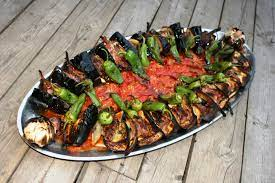

4 Kişilik | Hazırlanma Süresi: 60-90 dk | Pişirme Süresi 90-120 dk

Malzemeler
- 500 gr kuzu eti
- 3 adet patlıcan
- 1 adet patates
- 7-8 tane biber
- 2 adet domates
- 4-5 diş sarımsak
- Tuz
Tokat Kebabı Nasıl Yapılır?
- Etler kuşbaşından büyük doğranır.
- Patlıcanlar enlemesine ikiye bölünür, ikiye yada üçe kesilir tuzlu suda bekletilir.
- Patatesler ince dilimlenir, domatesler soyulur, küp küp doğranır, tuzlanır, sarımsaklar soyulur.
- Tepsiye sırasıyla patlıcan, et, patates şeklinde dizilir ortasına domatesler üzerine de sarımsak ve
biberler dizilir.
- 220 derecede kızarana kadar yaklaşık 1 saat pişirilir istediğiniz bir tepside olabilir güveçte yapılmaz.
Afiyet olsun !